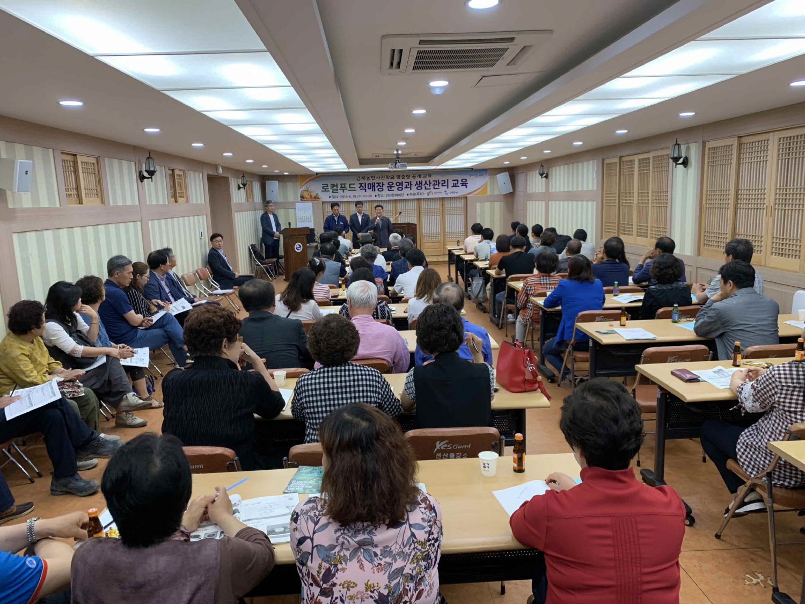
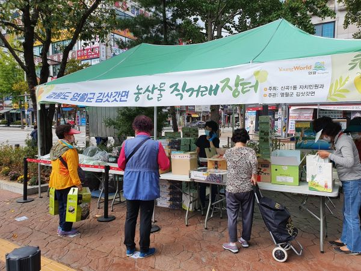

농부장터 소개
직매장 운영
식당 운영
네트워크 사업
교육 사업
조합원 정보
농부장터 역사
찾아오시는 길
생산자와 소비자가
직접만나는 곳
생산자와 소비자 간 마음의 거리는 줄이고
관계를 쌓아가는 이곳은 농부장터 입니다.
■ 교육사업
로컬푸드 전문인력양성 사업
경북 농민사관학교 청년로컬푸드 창업과정 운영
생상자출하자 교육
정기 생산자 출하자 교육
잔류 농약 안전성 교육, 직매장 출하 교육,
농업농촌현황 교육 등
신규 출하 농가 교육
- 협동조합 기본교육 및 직매장 운영방법 교육
소비자교육
GMO 안전성 교육
식생활 교육 및 체험 프로그램 진행
직원교육
로컬푸드 개념 및 커뮤니케이션 역량 강화 워크숍
농수산 식품유통공사(aT)실시 교육 참여

■ 농민장터사업

대!장!금!(대구 MBC에서 장보는 금요일)
- 2016~현재 대구 MBC 팡마당 직거래 장터 운영
직판행사
- 아파트 단지내 행사 박람회 등 가종 지역 출제 시 직거래 장터 운영